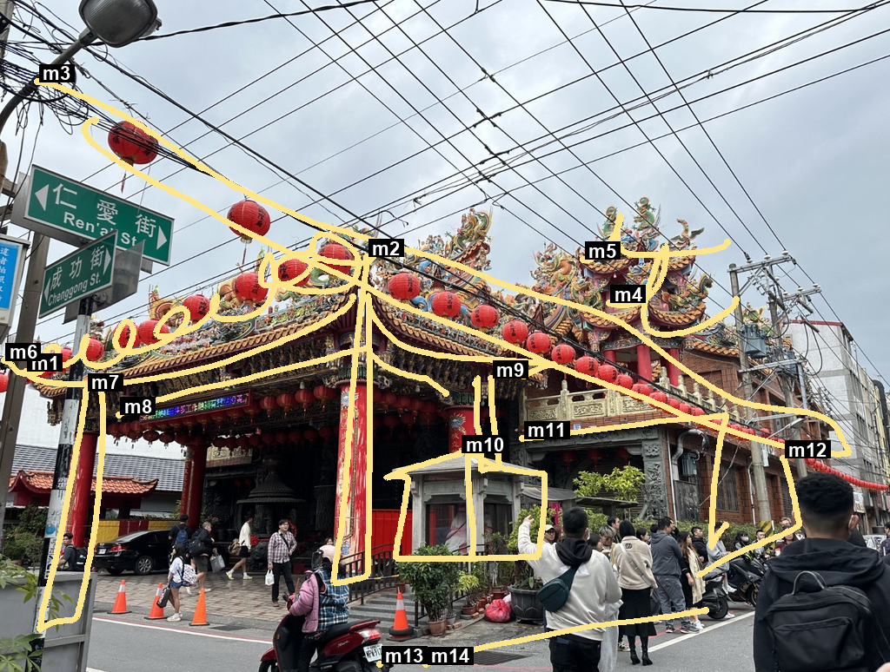
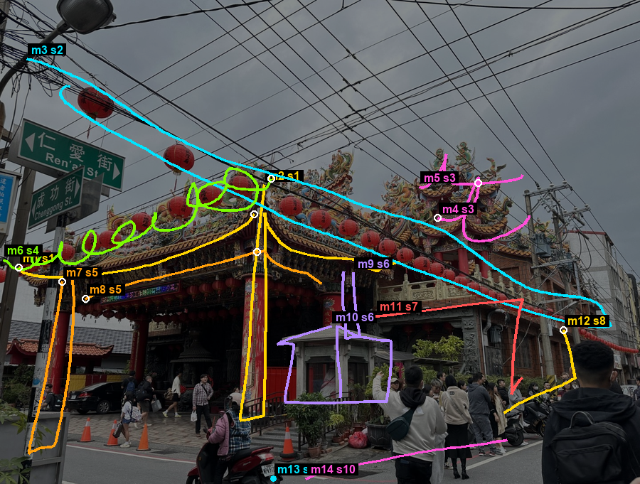

Tests the advisor's questions: stroke order and shape selection, limits, and questions that point at marks.
In the question images, green = marks the question points at, cyan = marks an option points at.
0e1faaf5-cf0b-4333-b4e3-8ae40f7473e1

Image 2 as sent

Groups (shapes), computed without AI. Guides dashed grey.
Sizes: 14 marks, 1876 points, marks JSON 30.0 KB,
prompt 10155 chars, geometry 33.4 ms,
call 32.6 s
Groups:
s1: m1, m2
s2: m3
s3: m4, m5
s4: m6
s5: m7, m8
s6: m9, m10
s7: m11
s8: m12
s9: m13
s10: m14
Stroke order note: The sketcher began with the main roof slopes and large temple silhouette before moving to smaller architectural details like the pillars, kiosk, and ground plane.
What each mark traces:
m1 left roof line of the main temple roof (line, contour, fit close) Traces the sloping roofline on the left side of the temple.
m2 center column and roof angle of the temple (line, perspective_guide, fit loose) Establishes the central vertical support and roof slope.
m3 outer contour of the temple roof and power lines (shape, big_shape, fit loose) Encloses the main mass of the temple roof complex and upper overhead wires.
m4 lower roof edge of the right temple tier (line, contour, fit close) Marks the horizontal roof eave on the right side of the temple.
m5 top decorative ridge of the right temple roof (line, contour, fit close) Follows the ornate upper roofline of the right tower.
m6 row of hanging red lanterns along the left eave (line, gesture, fit loose) Captures the rhythmic looping motion of the suspended lantern chain.
m7 left main pillar of the temple entrance (form, contour, fit close) Outlines the tall red column supporting the left side of the porch.
m8 horizontal entrance beam under the left roof (line, alignment, fit close) Connects the structural supports along the lower front beam.
m9 roof of the small stone kiosk (shape, big_shape, fit close) Blocks in the roof structure of the small central stone booth.
m10 walls of the small stone kiosk (line, contour, fit close) Traces the vertical walls of the kiosk in front of the temple.
m11 balcony line of the side building (line, perspective_guide, fit close) Guides the perspective angle along the right side balcony.
m12 outer vertical wall edge on the right (line, contour, fit close) Defines the rightmost corner edge of the building facade.
m13 nothing in the scene (space, measurement, fit not_applicable) Marks a reference point on the street surface.
m14 street ground line in front of the crowd (line, ground_line, fit loose) Establishes the sloped ground plane of the street in the foreground.
Mark relationships:
m1, m2, m8 alignment / line: The main roof slope, central support, and horizontal beam meet to form the structural framework of the temple entrance.
m4, m5 repetition / rhythm: The upper and lower rooflines of the right temple tier repeat parallel decorative angles.
m9, m10 containment / form: The kiosk roof shape sits directly on top of its vertical wall structure.